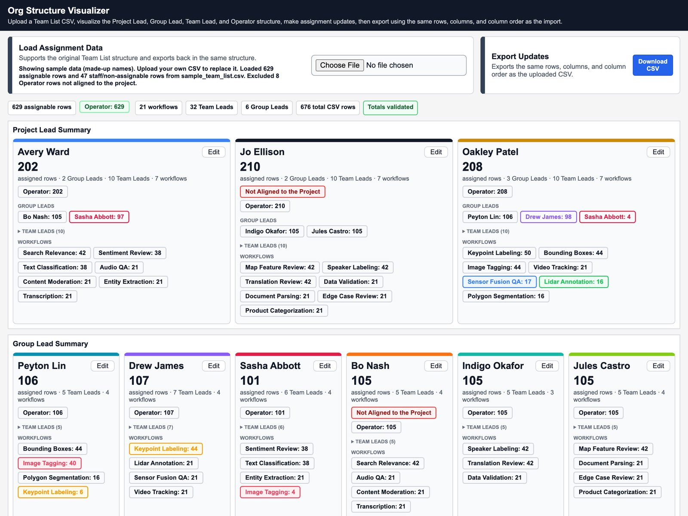
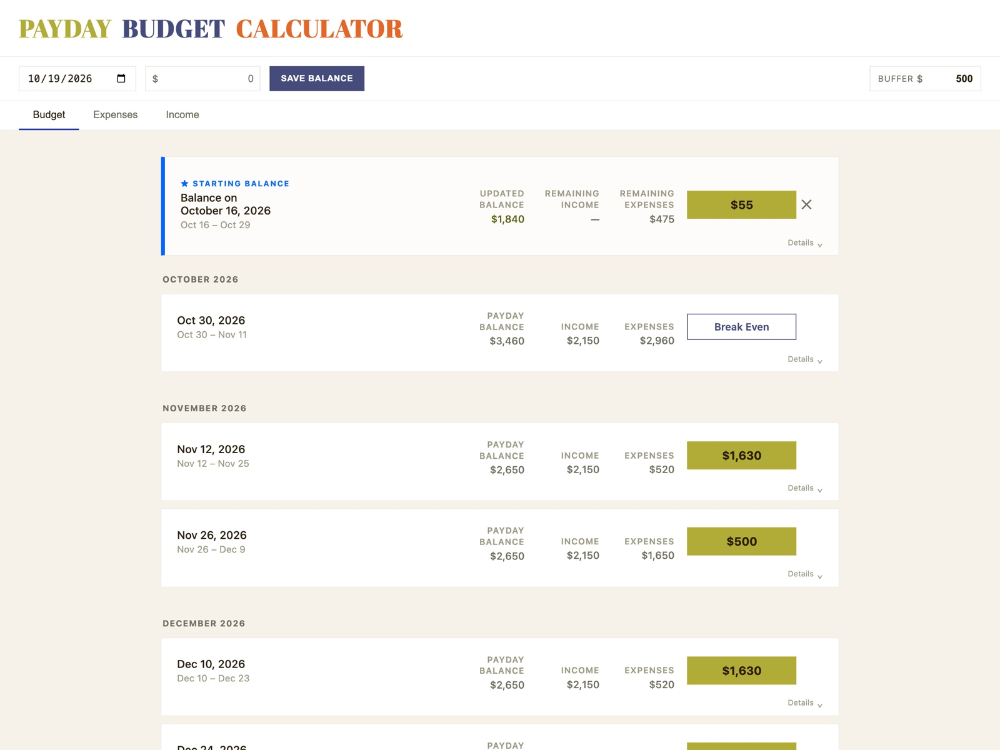
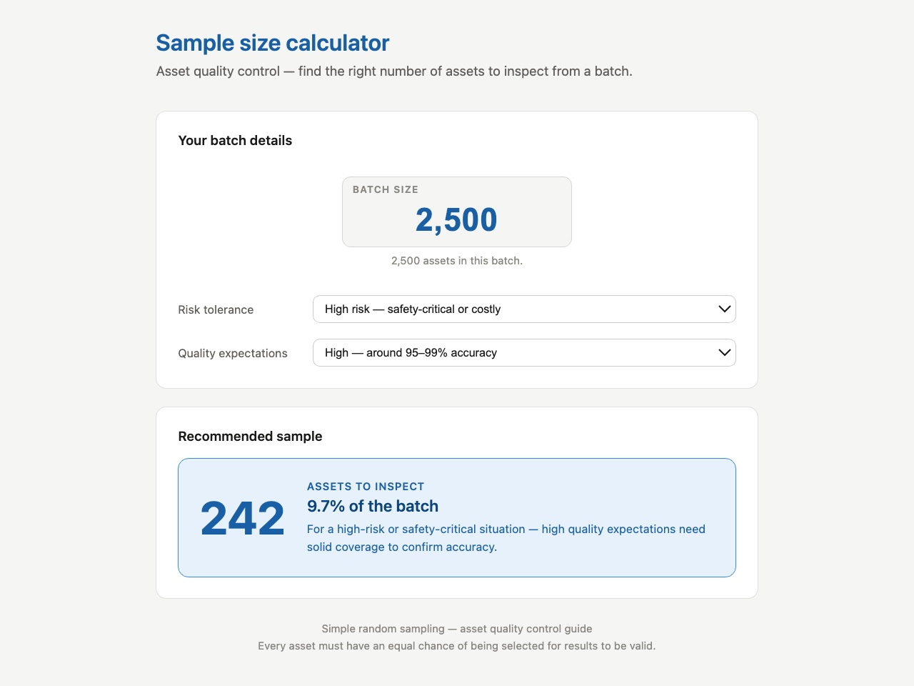

Projects


03Org Structure Visualizer
Turns a team roster CSV into a clear org structure, with summary stats that inform staffing decisions. Restructure teams with drag and drop, then export an updated CSV in the original format.
What it does
- Loads a team list CSV and maps it into project manager, group lead, team lead, operator and buffer roles.
- Summarizes headcount by manager and workstream, with operational stats like team size, co-location and work-from-home counts.
- Flags data issues, such as missing or mismatched employee IDs.
- Lets you reassign people and auto-balance team leads, then exports a CSV with the same rows, columns and column order as the import.
Built with
Why I built it
[What prompted it and what it changed.]
02Payday Budget Calculator
Projects your balance paycheck to paycheck, with a safety buffer, so shortfalls show up before they happen.
What it does
- Starts from a saved balance and a safety buffer you choose.
- Tracks recurring expenses and income sources, including paychecks that follow a schedule like every two weeks.
- Breaks the months ahead into pay periods and shows each period's income, expenses and projected balance.
- Saves everything in your browser, so nothing leaves your device.
Built with
Why I built it
[What prompted it and what it changed.]
01Sample Size Calculator
Inspection recommendations from batch size, risk tolerance and defect rate.
What it does
- Takes a batch size, a risk tolerance and a quality expectation.
- Recommends how many assets to inspect, as a count and as a share of the batch, with a plain-language explanation.
- Built for asset quality control using simple random sampling.
Built with
Why I built it
[What prompted it and what it changed.]
Experience
2024 — 2026
Data Scientist · iMerit
As iMerit's first data scientist, my job was building the foundation that turned messy data into something we could make decisions with.
-
Medical Nov 2024 – Jul 2025
I projected revenue for leadership and uncovered client trends to target new business. To help close deals, I looked for high-impact improvements in client projects. In one pilot, noticing that short audio files took disproportionately long led to a fix that cut annotation time by more than half.
-
RevOps Jul 2025 – Feb 2026
I led the structuring and monitoring of our sales and marketing funnel, working directly with the company president. That meant cleaning 16,000+ Salesforce records with Python, which cut data gaps by 60%, and building a dashboard to track it live.
-
Autonomous Vehicles Feb – Aug 2026
After finishing my RevOps project, I moved to Autonomous Vehicles, where longstanding projects with large teams meant automation could have a big impact. There I built near real-time S3 → BigQuery pipelines feeding Looker Studio dashboards. Later, I developed my own portal that automated quality and throughput reporting for project leaders, cutting data processing time by 89%.
2022 — 2024
Solutions Architect · iMerit
As a Solutions Architect, I turned what clients needed into optimized workflows our annotation teams could run.
-
Design
Across 15+ client projects spanning text, images, audio, video and medical data, I designed annotation and evaluation workflows and shaped the rubrics and guidelines behind them. With one client, I clustered overlapping label classes, cutting time per task by 30% while improving quality, without losing anything they needed.
-
Launch
I selected and deployed the right annotation platform (Ango, V7 or Dataloop) for each client's needs and budget. On one scraped-image dataset, I flagged NSFW risk and set up pre-screening so sensitive content never reached the labeling team.
-
Monitoring
After launch, I worked with Delivery to monitor live production and refine tooling, guidelines and workflows until we hit quality and throughput targets. When one client was concerned about time per task, we set up daily reporting on object density, which showed what was driving it.
2021
Data Science Intern · Inference Analytics
In my first data science role, I processed and cleaned medical imaging data for TensorFlow CNN models. I built Tableau dashboards to track patient follow-ups and flag missed ones, reducing hospital administrative lag.
2017 — 2020
Account Manager · Jet International
Before moving into data, I brokered deals with airlines and engine shops around the world to get them the parts they needed, bringing in $2.2M in personal gross sales in 2019. When airlines sold parts in bulk packages or retired-aircraft teardowns, I used our historical sales and market data to help our vice president estimate what would sell and for how much.
About
ABOUT ME:
My Hobby is having Hobbies
Cycle through my hyperfixations with me,
except Bishop; my love for my puppy is forever.